How to Build Your Own Website
Step-by-Step Guide
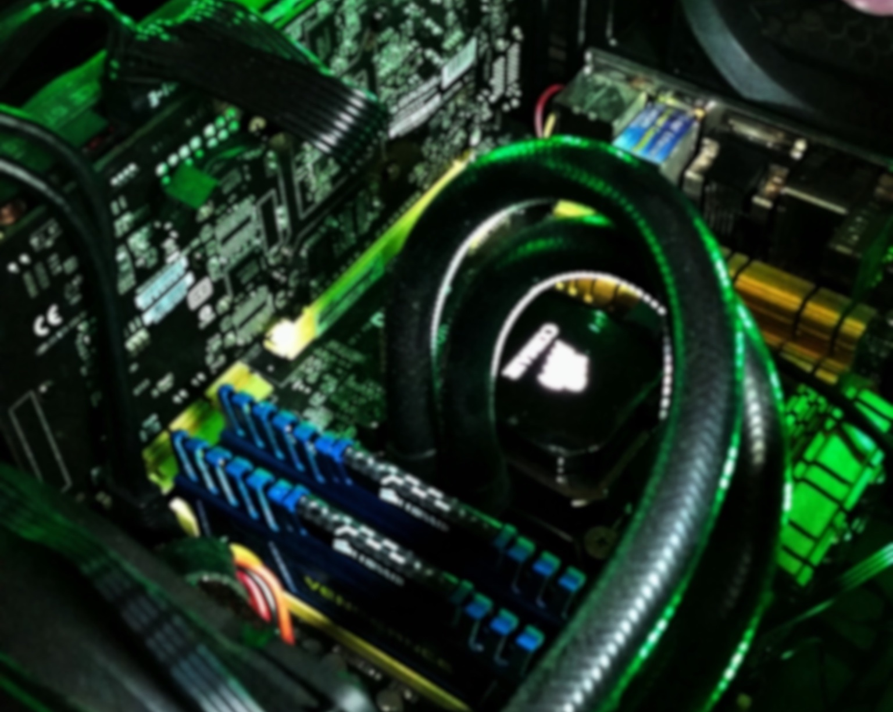
intro paragraph
This is for a static page only as GitHub cannot support back-end webhosting processes.
Stage 0 - Understand the Basic Function of the Internet
basic overview of how the internet works
Want some more depth?
Below is a fantastic three video arc giving an entire crash course on the internet and how it functions. I would highly recommend watching these to gain a greater understanding of the basics behind all of the stages within this guide.
Computer Networks: Crash Course Computer Science #28:
"Today we start a three episode arc on the rise of a global telecommunications network that changed the world forever. We’re going to begin with computer networks, and how they grew from small groups of connected computers on LAN networks to eventually larger worldwide networks like the ARPANET and even the Internet we know today. We'll also discuss how many technologies like Ethernet, MAC addresses, IP Addresses, packet switching, network switches, and TCP/IP were implemented to new problems as our computers became ever-increasingly connected. Next week we’ll talk about the Internet, and the week after the World Wide Web!"
The Internet: Crash Course Computer Science #29:
"Today, we're going to talk about how the Internet works. Specifically, how that stream of characters you punch into your browser's address bar, like "youtube.com", return this very website. Just to clarify we're talking in a broader sense about that massive network of networks connecting millions of computers together, not just the World Wide Web, which is a portion of the Internet, and our topic for next week. Today, we're going to focus on how data is passed back and forth - how a domain name is registered by the Domain Name System, and of course how the data requested or sent gets to the right person in little packets following standard Internet Protocol, or IP. We'll also discuss two different approaches to transferring this data: Transmission Control Protocol, or TCP, when we need to be certain no information is lost, and User Datagram Protocol, or UDP, for those time sensitive applications - because nobody wants an email with missing text, but they also don't want to get lag-fragged in their favorite first person shooter."
The World Wide Web: Crash Course Computer Science #30:
"Today we’re going to discuss the World Wide Web - not to be confused with the Internet, which is the underlying plumbing for the web as well as other networks. The World Wide Web is built on the foundation of simply linking pages to other pages with hyperlinks, but it is this massive interconnectedness that makes it so powerful. But before the web could become a thing, Tim Berners-Lee would need to invent the web browser at CERN, and search engines would need to be created to navigate these massive directories of information. By the mid 1990’s we will see the rise of Yahoo and Google and monolithic websites like Ebay and Amazon, forming the web we know today. But before we end our unit on the Internet we want to take a moment to discuss the implications of Net Neutrality, and its potential to shape the Internet's future."
stage conclusion
Stage 1 - Set Up the Hosting Environment
stage introduction
Step 1.1 - Sign Up for GitHub
Head over to github.com

Choose the free plan as there is no need for a paid plan for this and, for that matter, most other non-professional uses. What you decide on the “Tailor you experience” part of signing up is completely up to you and what you would like to put.
After you have made it past these sign-up steps, go check and verify your email and move on to the next step!
Step 1.2 - Create GitHub Repository
To create the spot where we will be putting the code for your website, you will need to create a new “repository” (this is slightly different than a project, so make sure you click the correct one). To do so, go to the upper right-hand corner of the page, click the “+” button and “New repository.”
Getting this next step correct is very import for getting your site connected correctly. For your repository name, make sure you name your project exactly “YOURUSERNAME.github.io”. For example, if your username is “billgates” your repository name should be “billgates.github.io”. This tells GitHub that you are creating a webpage for your project. Accordingly, GitHub only allows a user to have one repository in this way. Check the box for "Initialize with a README".

Your "Code" tab should now look like this.

Step 1.3 - Install GitHub Desktop
While you could certainly work out of your repository directly on GitHub’s website, this would become quite tedious as you try to create and update your website code. To download, head to GitHub Desktop and download the correct one for your OS (this is currently available for Mac or Windows, but not Linux).

Click "Sign in to GitHub.com" and sign in with the information that you just created in Step 1.1. This option will redirect you to your browser to more quicky sign in if you are already signed in on your browser. You could instead manually sign in using your username and password by choosing "Sign in to GitHub.com using your username and password".

Step 1.4 - Clone Your Repository to Your Desktop
you can pull directly from github after signing in
Alternatively, within the GitHub website, you are going to want to set up in your desktop by clicking on the “Code” tab, click “Clone or download”, and click “Open in Desktop”. Your browser should launch GitHub Desktop (or ask you to launch GitHub Desktop in which you would just click “Yes” in your browser).
Regardless of which way you do it, a window should then pop up on GitHub Desktop that pre-fills your Repository URL and a Local Path. Feel free to change your local path if you would like to save it somewhere handy, like your Documents folder, for example.
Click Clone and it will clone the repository to your computer at the path you chose.
After cloning, it should open to something that looks mostly like this.
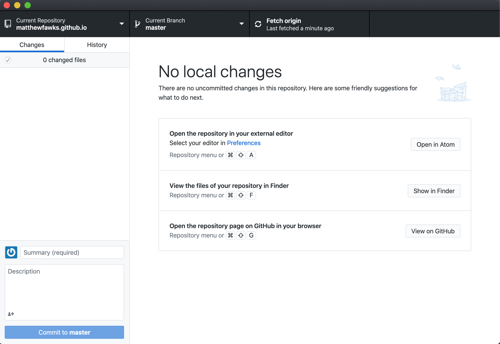Now you are ready to move on to the second stage, but keep all of this available as we will circle back to it shortly after the next stage! Note that you could technically skip Stages 2 and 3 and come back to it after setting up your site as you will still be able to view your site by typing “YOURUSERNAME.github.io” in the URL part of your browser. Do this if you are unsure of you want to commit to purchasing a domain name already or just want to make sure you can get it to work beforehand.
stage conclusion/aternatives -> [potential alternatives to GitHub -> While GitHub is… AS you may notice on the next stage, Namecheap offers hosting…]
Stage 2 - Get a Domain Name
introduction to what a domain name is and the function it will play for the site
The default domain name of the GitHub repository you just created, for example, is currently name_you_chose.github.io, which should also be your repository name.
Step 2.1 - Create a Namecheap Account
step instructions


Step 2.2 - Search for and Select a Domain
step instructions - You will notice several different options available with everything from the normal .com and .org to ones such as .to or .me.


Step 2.3 - Purchase the Domain
step instructions - you will notice "Improve Your Site" options, but none of these will be necessary as we are using GitHub pages to host your site. (GitHub is powered by and automatically provides an SSL certificate as well and you'll be able to redirect any emails sent to your site address to your personal email and reply as desired). Get WHOIS guard. Choose automatic renewal if desired.


Go through the remaining steps to complete your purchase and go ahead and download the receipt for your records.

stage conclusion/alternatives -> potential alternatives to Namecheap -> GoDaddy and Gandi
Stage 3 - Configure Domain Name for GitHub Pages
introduction to what this means and the function it will play for the site
Step 3.1 - Configure DNS in Namecheap
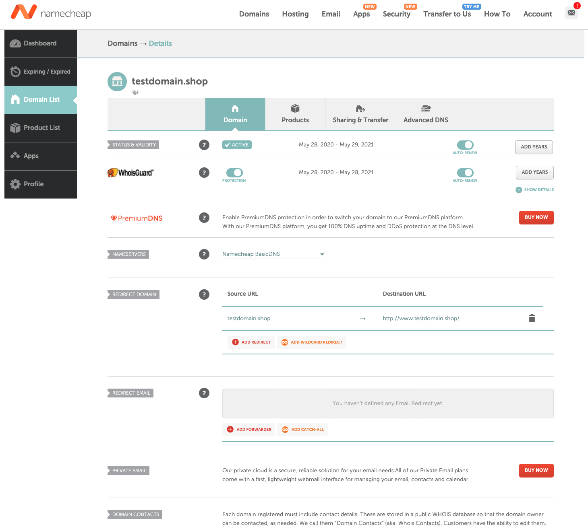


step instructions - It may take up to 24-48 hours for local ISPs to update their DNS cache so that everyone can see your website.
Step 3.2 - Set Up GitHub Pages
step instructions go to your repository and click "Settings". It will default to "Options". Scroll down to "GitHub Pages", it will look like this but with your repository name instead of mine.
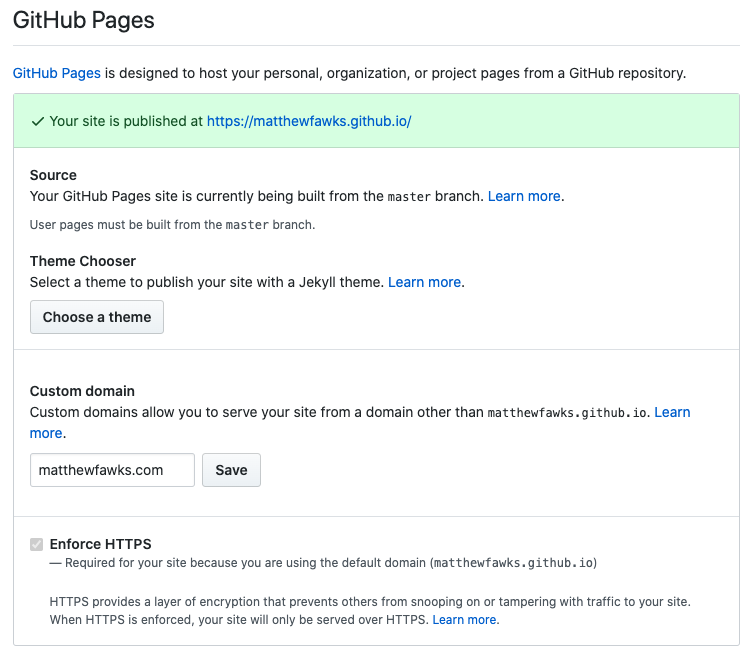Enter the domain name you just purchased exactly as it is spelled into the spot. Using the above, I would put in "testdomain.shop". Not that it doesn't need to match your username or anything, "matthewfawks.com" is just what I preferred my domain to be. After it saves, make sure "Enforce HTTPS" is selected.
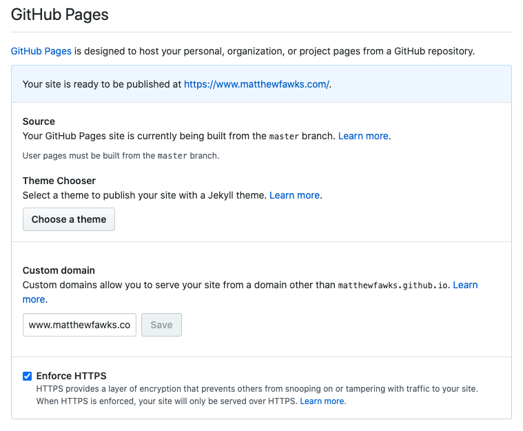This may automatically create a CNAME file in your repository, but if it doesn't then...
 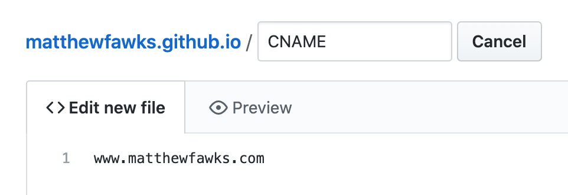
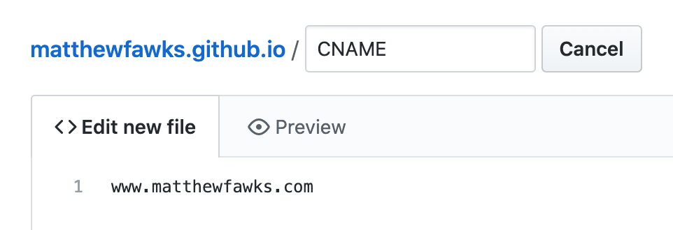

stage conclusion/alternatives -> potential alternatives to this -> this will vary based on which host you choose and where you get your domain name. Consider seeing if any documentation existis for how to configure this in your selected use-case (for example: GitHubs Documentation https://help.github.com/en/github/working-with-github-pages/managing-a-custom-domain-for-your-github-pages-site or https://help.github.com/en/github/working-with-github-pages/configuring-a-custom-domain-for-your-github-pages-site for configuring a custom domain name), or simply Google and see what resources/guides might be out there.
Stage 4 - Create Your Basic Site
Congrats on getting this far! Now that you have prepared the hosting environment, the next step is to create a basic site to be hosted! introduction to what this means and the function it will play for the site. Give template to work with here and explain how to get others
Step 4.1 - Set Up Editing Environment
step instructions - show ATOM - alternatives are...

Step 4.2 - Download Template
step instructions - If you already have a tempalte or just want to mess around with HTML/CSS/JS on your own then this is where you will want to end.
LINK TO LICENSE: https://creativecommons.org/licenses/by/3.0/
LICENSE GOVERNING BUILD-YOUR-OWN-WEBSITE STEP-BY-STEP MATERIALS
Attribution: This work, "Build-Your-Own", is a derivative of "Creative Commons Identity Template" by HTML5 UP, used under CC BY. "Build-Your-Own" is licensed under CC BY by Matthew Fawks.
If you’re wanting to step it up a little but still keep it simple like this one, I would recommend moving up to HTML5 UP’s Astral Template<”https://html5up.net/astral”> or checking out any one of their numerous other templates <”https://html5up.net/”>. They are distributed under a Creative Commons Attribution 3.0 License, so be sure and be conscious of attributing the work to HTML5 UP. Alternatively, you could pay as little as $19 one-time for forever attribution-free use of over 95 different templates with Pixelarity
https://fontawesome.com/icons Font Awesome Free - Version 5.9.0
https://favicon.io/
Step 4.3 - Edit the Template
step instructions - give reosources to learning html/css/js - show example before version
 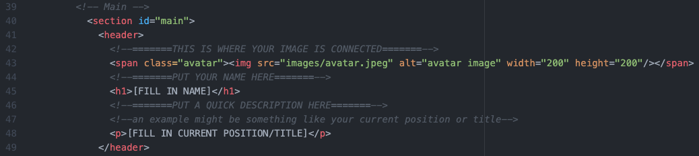
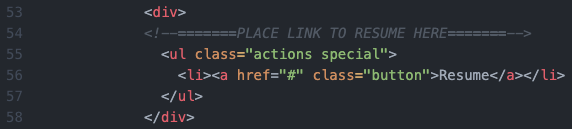
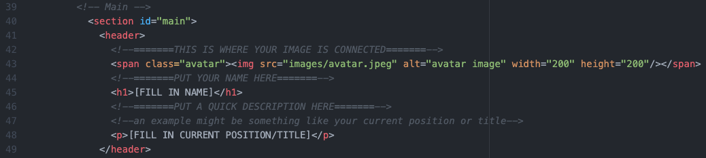
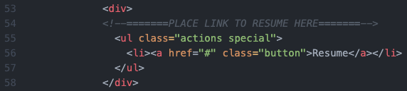
 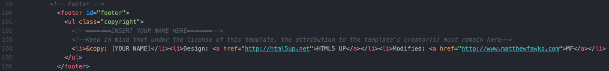
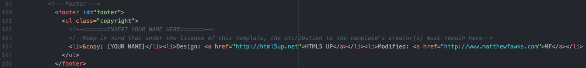
 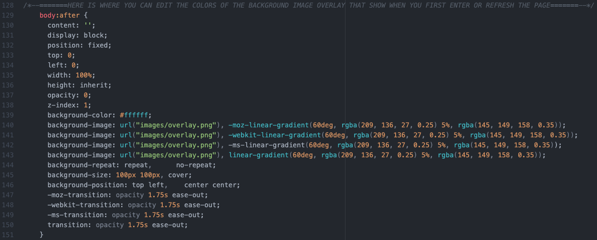
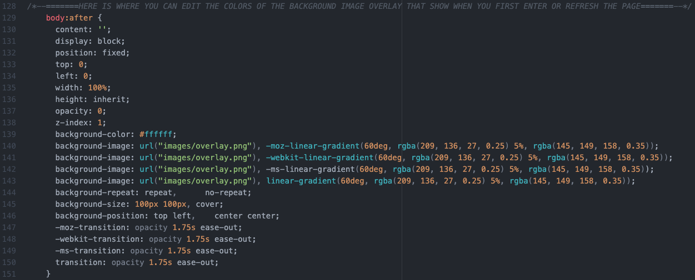
Step 4.4 - Upload Changes & Confirm Website Works
step instructions - show how to use GitHub Desktop to upload Changes show example finished version feel free to get in touch with me if you are unable to make something work.
stage conclusion
Stage 5 & Beyond
You now have a fully functioning site that you can link to wherever your heart desires!
If you liked this guide, please share it so others can see. (share webpage button)
Conclusion
Best of luck, and feel free to email me or send a message below if you are stuck on where to begin or if you have any other question and we can work through it together! Also, remember to check out my in-depth guide for a step-by-step walkthrough for building and hosting a basic website from scratch.